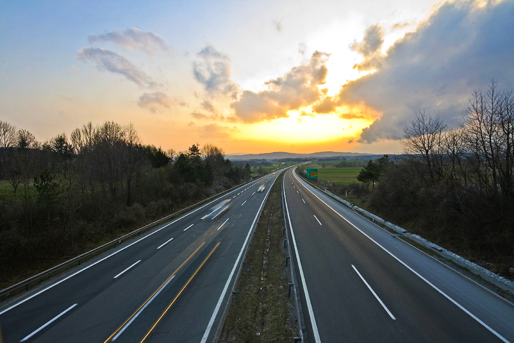

А́втомагістра́ль (автомобі́льна магістра́ль) — тип автомобільної дороги, що запроектована та збудована для швидкісного автомобільного руху, яка не має перетинів в одному рівні з іншими транспортними спорудами, де вхідний і вихідний транспортні потоки є регульованими, а смуги руху в протилежних напрямках фізично розділені для недопущення фронтальних зіткнень[1]. Регулювання тут слід розуміти не як світлофорне чи здійснюване певною особою (наприклад, вуличним регулювальником), а як те, що заїзд чи виїзд з автомагістралі може здійснюватися лише через рампи та перехідно-швидкісні смуги, що дають змогу підлаштувати швидкість автомобіля до швидкості транспортного потоку на автомагістралі.
- Phone
- Laptop
- TV sets
- Tools
- Software
Автомагістралі забезпечують безперешкодний рух транспортного потоку без світлофорів та без прямого доступу до в'їзду на території прилеглих до магістралі об'єктів. Єдиним винятком є з'їзди на територію об'єктів та служб, що безпосередньо обслуговують автомагістраль, як, наприклад, станції дорожнього сервісу[en]. Перетини з іншими дорогами, залізницями, пішохідними доріжками виконані виключно в різних рівнях, тому транспортні потоки не перетинаються. Це кардинально підвищує безпеку руху[2].
Перші автомагістралі з'явилися на початку 20-го століття. 1924 року Італія відкрила автостраду Autostrada dei Laghi (тепер Автострада А8[it]), що з'єднала Мілан та Варезе. Невдовзі в Німеччині був споруджений перший автобан, що з'єднав Бонн та Кельн. Автомагістралі швидко поширилися в Європі та Америці. Англія була одна з останніх розвинутих країн, що впровадила такі дороги (Preston By-pass, 1958)[3].
Таке означення практично повторюється і в документі «Про правила дорожнього руху» (Постанова КМ від 10.10.2001 р. № 1306)[4].

Воно не повністю корелюється зі стандартами на автомагістралі в інших країнах. Наприклад, у США та Канаді огородження на розділювальній смузі може не бути, якщо смуги руху розділені широким кюветом[5][6]. А огородження на узбіччях зазвичай передбачається лише на високих насипах або для захисту автомобілів від зіткнення зі спорудами (підпорами мостів, фундаментами дорожніх знаків тощо)[7].
Організація економічного співробітництва та розвитку подає наступне означення[8]:
Дорога, спеціально запроектована та споруджена для автомобільного руху, що не обслуговує суміжні території, і яка:
(a) має смуги руху, протилежні напрямки яких розділені серединною смугою, не призначеною для проїзду, або ж іншими роздільни́ми засобами;
(b) не має перетинів в одному рівні з іншими дорогами, залізницями, трамвайними коліями та пішохідними доріжками;
(c) позначена відповідними дорожніми знаками й призначена лише для певних транспортних засобів.
У більшості штатів Америки стандарти означують автомагістраль через ієрархічну послідовність термінів:
freeway — це expressway з повним контролем доступу і розділеними рівнями на всіх перетинах доріг;
expressway — це arterial highway з розділеними смугами руху, що призначений для транзитного проїзду, з частковим або повним контрольованим доступом, з розв'язками у різних рівнях на головних перетинах доріг;
arterial highway — загальний термін для доріг, що призначені для транзитного руху, зазвичай з прямим безперервним сполученням[6]